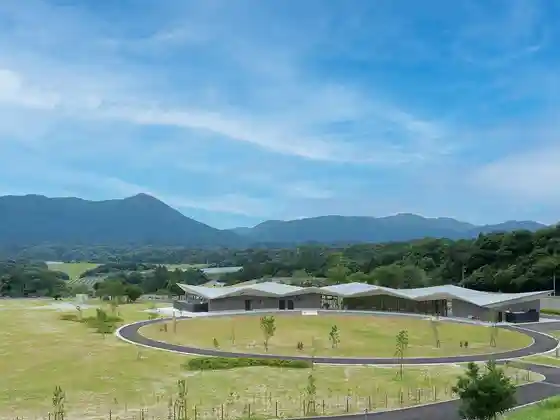
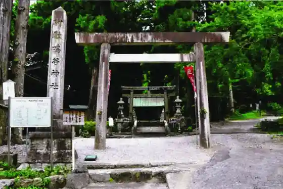
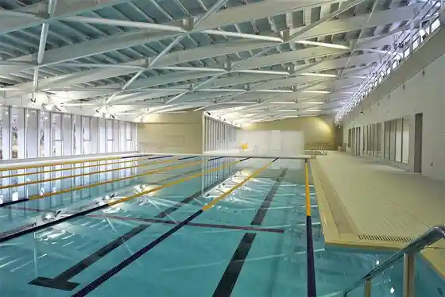
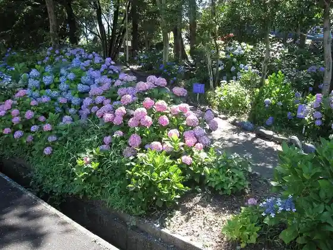

Inabe Umebayashi Park Awai
Inabe, Mie · Official / source link

Narutani Shrine
Inabe, Mie · Official / source link

Inabe Onsui Puru
Inabe, Mie · 0594-78-4335 · Official / source link

Manyo no Sato Park
Inabe, Mie · 0594-72-2200 · Official / source link

Inabe Oizumi Eki Ensen no Nemofira
Inabe, Mie · Official / source link
Fujiwara Gaku
Inabe, Mie · 0594-86-7833 · Official / source link
Inabe Nogyo Park Umebayashi Park
Inabe, Mie · 0594-46-8377 · Official / source link
Inabe Park
Inabe, Mie · 0594-86-7835 · Official / source link
Inabe Kawa Sanpomichi
Inabe, Mie · 0594-86-7833 · Official / source link
Suriireikusukantorii Club
Inabe, Mie · 0594-74-3211 · Official / source link
Kanai Shrine
Inabe, Mie · 0594-88-5588 · Official / source link
Nordisk Hygge Circles UGAKEI
Inabe, Mie · 0594-37-7769 · Official / source link
Kiribayashi Kan
Inabe, Mie · 0594-86-7846 · Official / source link
Yamaterasu -FUJIWARA OUTDOOR LIVING-
Inabe, Mie · 052-459-3325 · Official / source link
Ao Kawa Kyo Kyanpingu Park
Inabe, Mie · 0594-72-8300 · Official / source link
Ryugagaku
Inabe, Mie · 0594-78-3737 · Official / source link
Fisshingusankuchuari
Inabe, Mie · 0594-46-8820 · Official / source link
Ga Ke Shrine
Inabe, Mie · 0594-72-3443 · Official / source link
Oike Gaku
Inabe, Mie · 0594-86-7833 · Official / source link
Kachi Izumi Tera
Inabe, Mie · 0594-37-3514 · Official / source link
Hikari Hasu Tera
Inabe, Mie · 0594-86-7846 · Official / source link
Gyo Jun Tera
Inabe, Mie · 0594-72-2269 · Official / source link
Tanabe Joshi
Inabe, Mie · 0594-86-7846 · Official / source link
Nagashimakantorii Club
Inabe, Mie · Official / source link
Narutani Yama Shoho Tera
Inabe, Mie · 0594-46-8101 · Official / source link
Torin Tera Shirataki
Inabe, Mie · 0594-37-3514 · Official / source link
Fujiwara Park Gorufu Ba
Inabe, Mie · 0594-46-8377 · Official / source link
Kita Sei Raidingu Farm
Inabe, Mie · 0594-72-7655 · Official / source link
Fujiwara Gaku Shizen Science Museum
Inabe, Mie · 0594-46-8488 · Official / source link
Uga Kei Sho Baku
Inabe, Mie · 0594-78-3737 · Official / source link
Megane Hashi Nejiri Hashi
Inabe, Mie · 0594-86-7833 · Official / source link
Inabe Nogyo Park Eko Fukushi Plaza
Inabe, Mie · 0594-46-8377 · Official / source link
Omi Tsuka Burial Mound
Inabe, Mie · 0594-86-7846 · Official / source link
Kokugen Nichiei Ishi
Inabe, Mie · 0594-86-7846 · Official / source link
Saito Hara Ekimae Park
Inabe, Mie · 059-364-2143 · Official / source link
Experience Gakushu Keibintetsudo Museum
Inabe, Mie · 0594-72-2478 · Official / source link
Kamotsu Tetsudo Museum
Inabe, Mie · 059-364-2141 · Official / source link